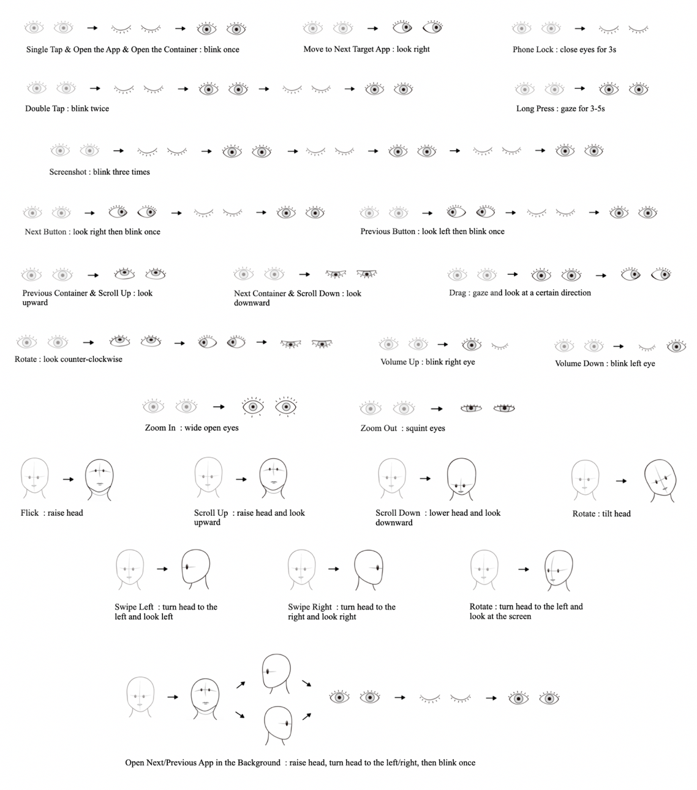
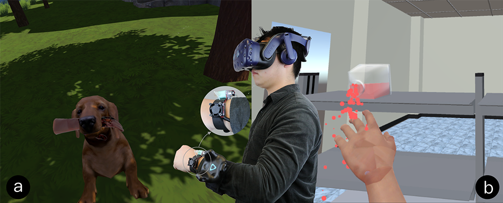
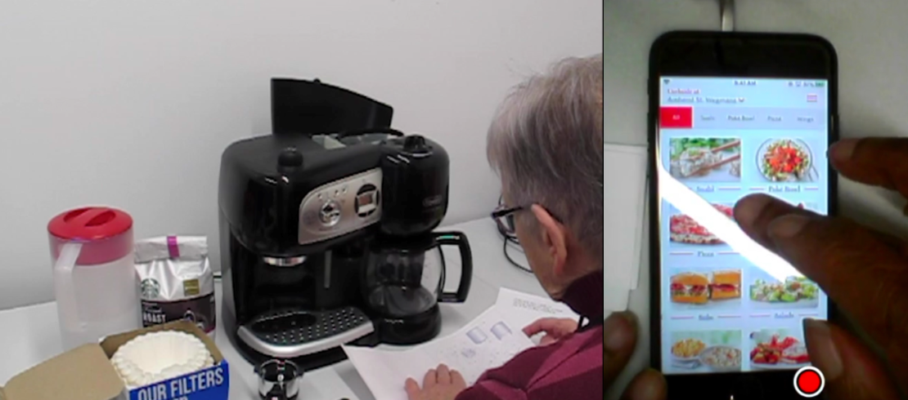
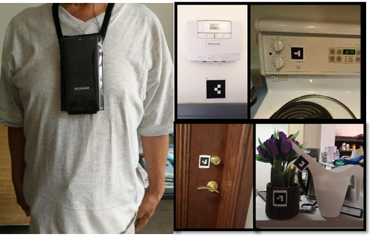
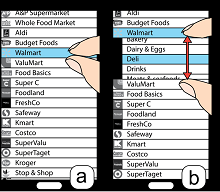
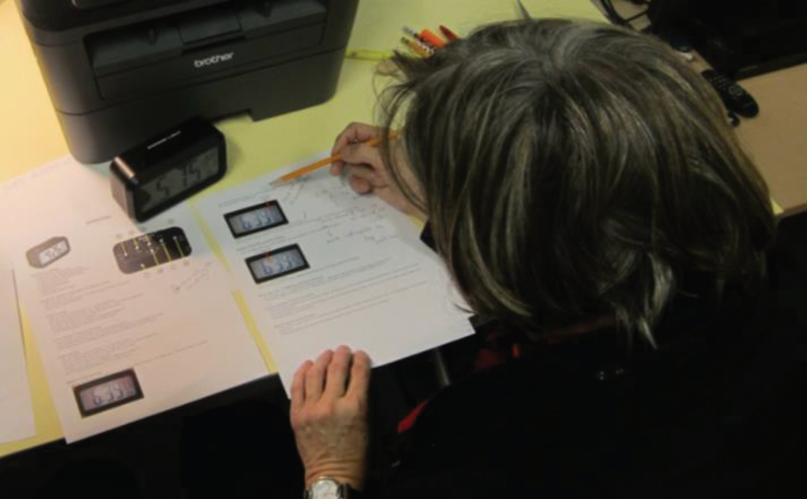
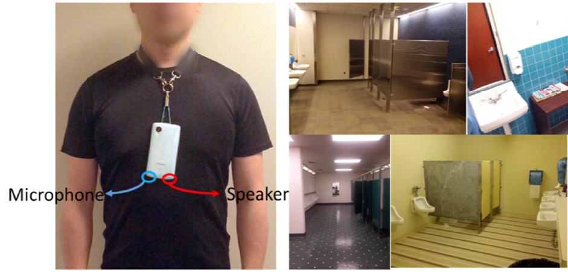
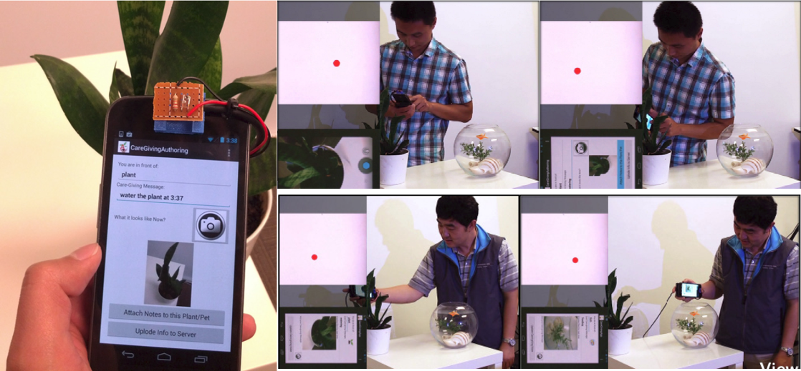

Note: *: Corresponding Author (annotated since 2022)
CHI 2022
"I Shake The Package To Check If It's Mine": A Study of Package Fetching Practices and Challenges of Blind and Low Vision People in China
Wentao Lei, Mingming Fan*, Juliann Thang In CHI Conference on Human Factors in Computing Systems (CHI'22) (Accepted)
CHI 2022

"I Don't Want People to Look At Me Differently": Designing User-Defined Above-the-Neck Gestures for People with Upper Body Motor Impairments
Xuan Zhao, Mingming Fan*, Teng Han In CHI Conference on Human Factors in Computing Systems (CHI'22) (Conditionally Accepted)
CHI 2022
"Merging Results Is No Easy Task": An International Survey Study of Collaborative Data Analysis Practices Among UX Practitioners
Emily Kuang, Xiaofu Jin, Mingming Fan* In CHI Conference on Human Factors in Computing Systems (CHI'22) (Conditionally Accepted)
CHI 2022
From WOW to WHY: Guidelines for Creating the Opening of a Data Video with Cinematic Styles
Xian Xu, Leni Yang, David Yip, Mingming Fan*, Zheng Wei, Huamin Qu In CHI Conference on Human Factors in Computing Systems (CHI'22) (Accepted)
CHI 2022
"I need to be professional until my new team uses emoji, GIFs, or memes first": New Collaborators’ Perspectives on Using Non-Textual Communication in Virtual Workspaces
Esha Shandilya, Mingming Fan, Garreth Tigwell In CHI Conference on Human Factors in Computing Systems (CHI'22) (Conditionally Accepted)
Human-AI Collaboration for UX Evaluation: Effects of Explanation and Synchronization
Mingming Fan*, Xianyou Yang, Tsz Tung Yu, Vera Q. Liao, Jian Zhao CSCW 2022 (To be presented) Proceedings of the ACM on Human-Computer Interaction (PACM HCI), CSCW 2022 PDF
Chinese CHI 2021
Think-Aloud Verbalizations for Identifying User Experience Problems: Effects of Language Proficiency with Chinese Non-Native English Speakers
Mingming Fan, Lingyun (Julie) Zhu Chinese CHI 2021 The Ninth International Symposium of Chinese CHI (Chinese CHI 2021), ACM, 11 pages. PDF
TVCG (VIS 2021)
CoUX: Collaborative Visual Analysis of Think-Aloud Usability Test Videos for Digital Interfaces
Ehsan Jahangirzadeh#, Emily Kuang#, Mingming Fan, Jian Zhao (#: equal contribution) IEEE VIS 2021 IEEE Transactions on Visualization and Computer Graphics PDF |Video |Code
IMWUT (UbiComp 2021)

Douleur: Creating Pain Sensation with Chemical Stimulant to Enhance User Experience in Virtual Reality
Chutian Jiang#, Yanjun Chen#, Mingming Fan, Liuping Wang, Luyao Shen, Nianlong Li, Wei Sun, Yu Zhang, Feng Tian, Teng Han (#: equal contribution) UbiComp 2021 Proceedings of the ACM on Interactive, Mobile, Wearable and Ubiquitous Technologies (IMWUT), Volume 5, Issue 2, June 2021, Article No.: 66, pp 1–26. PDF
TSE
Accessibile or Not? An Empirical Investigation of Android App Accessibility
Sen Chen, Chunyang Chen, Lingling Fan, Mingming Fan, Xian Zhan, and Yang Liu IEEE Transactions on Software Engineering PDF | Website | Code
DIS 2021
"Too Old to Bank Digitally?": A Survey of Banking Practices and Challenges among Older Adults in China
Xiaofu Jin, Emily Kuang, Mingming Fan In ACM Conference on Designing Interactive Systems (DIS'21) PDF | Survey Questions
CHI 2021

Older Adults' Think-Aloud Verbalizations and Speech Features for Identifying User Experience Problems
Mingming Fan, Qiwen Zhao, Vinita Tibdewal In CHI Conference on Human Factors in Computing Systems (CHI'21) PDF | Talk
CHI 2021
"I Choose Assistive Devices That Save My Face": A Study on Perceptions of Accessibility and Assistive Technology Use Conducted in China
Franklin Mingzhe Li, Di Laura Chen, Mingming Fan, Khai N. Truong In CHI Conference on Human Factors in Computing Systems (CHI'21) PDF
CHI 2021
vMirror: Enhancing the Interaction with Occluded or Distant Objects in VR with Virtual Mirrors
Nianlong Li, Zhengquan Zhang, Can Liu, Zengyao Yang, Yinan Fu, Feng Tian, Teng Han, Mingming Fan In CHI Conference on Human Factors in Computing Systems (CHI'21) PDF | Video
TVCG (VIS 2021)
ChartSeer: Interactive Steering Exploratory Visual Analysis with Machine Intelligence
Jian Zhao, Mingming Fan, Mi Feng IEEE Transactions on Visualization and Computer Graphics, 2020 PDF | Video
ASSETS 2020
Eyelid Gestures on Mobile Devices for People with Motor Impairments
Mingming Fan#, Zhen Li#, Franklin Mingzhe Li# (#: equal contribution) In 22nd International ACM SIGACCESS Conference on Computers and Accessibility, 2020, Article No.: 15, pp 1–8 PDF | Video | Talk | Code | Application (Apk file)
| Best Artifact Award (2nd Place)
CHI 2020
Mouillé: Exploring Wetness Illusion on Fingertips to Enhance Immersive Experience in VR
Teng Han, Sirui Wang, Sijia Wang, Xiangmin Fan, Jie Liu, Feng Tian, and Mingming Fan In CHI Conference on Human Factors in Computing Systems, 2020 PDF | Video | Talk
TiiS
Automatic Detection of Usability Problem Encounters in Think-Aloud Sessions
Mingming Fan, Yue Li, Khai N. Truong ACM Transactions on Interactive Intelligent Systems (TiiS), Article No. 16, May 2020 PDF
JUS
Practices and Challenges of Using Think-aloud Protocols in Industry: An International Survey
Mingming Fan, Serina Shi, Khai N. Truong Journal of Usability Studies, Vol. 15, Issue 2, February, 2020, pp. 85-102 PDF |Survey
TVCG (VIS 2019)
VisTA: Integrating Machine Intelligence with Visualization to Support the Investigation of Think-Aloud Sessions
Mingming Fan, Ke Wu, Jian Zhao, Yue Li, Winter Wei, and Khai N. Truong IEEE Transactions on Visualization and Computer Graphics, Vol. 26, Issue 1, January, 2020 PDF | Video
TOCHI (CHI 2020)
Concurrent Think-Aloud Verbalizations and Usability Problems
Mingming Fan, Jinglan Lin, Christina Chung, Khai N. Truong ACM Transactions on Computer-Human Interaction. 26 (5), Article 8, 35 pages, 2019. PDF
IMWUT (UbiComp 2019)

FMT: A Wearable Camera-Based Object Tracking Memory Aid for Older Adults
Franlin Mingzhe Li, Di Laura Chen, Mingming Fan, and Khai N. Truong In Proceedings of ACM on Interactive, Mobile, Wearable and Ubiquitous Technologies PDF | New Scientist Report |ACM DL
CHI 2019
"I feel it is my responsibility to stream”: Streaming and Engaging with Intangible Cultural Heritage through Livestreaming
Zhicong Lu, Michelle Annett, Mingming Fan, Daniel Wigdor In 2019 CHI Conference on Human Factors in Computing Systems PDF |
Best Paper Award
CHI 2019

PinchList: Leveraging Pinch Gestures for Hierarchical List Navigation
on Smartphones
Teng Han, Jie Liu, Khalad Hasan, Mingming Fan, Junhyeok Kim, Jiannan Li, Xiangmin Fan,
Feng Tian, Edward Lank, and Pourang Irani In 2019 CHI Conference on Human Factors in Computing Systems PDF | Video
Internet of Things
Projected Visible Light for 3D Finger Tracking and Device Augmentation on Everyday Objects
Shang Ma, Qiong Liu, Mingming Fan, Phillip Sheu Internet of Things. 2019. Volume 6. Elsevier PDF
TVCG (VIS 2018)
InkPlanner: Supporting Prewriting via Intelligent Visual Diagramming
Zhicong Lu, Mingming Fan, Yun Wang, Jian Zhao, Michelle Annett, Daniel Wigdor IEEE Transactions on Visualization and Computer Graphics, Vol. 25, Issue 1, 2019 PDF | Video
TACCESS (ASSETS 2018)

Guidelines for Creating Senior-Friendly Product Instructions
Mingming Fan, Khai N. Truong ACM Transactions on Accessible Computing 11, 2, Article 9 (June 2018), 35 pages. PDF
ASSETS 2017
BrailleSketch: A Gesture-based Text Entry Method for
People with Visual Impairments
Franklin Li, Mingming Fan, Khai N. Truong In 19th International ACM SIGACCESS Conference on Computers and Accessibility (ASSETS
'17). PDF
ISWC 2017
An Empirical Study of Touch-based Authentication Methods on
Smartwatches
Yue Zhao, Zhongtian Qiu, Yiqing Yang, Weiwei Li, Mingming Fan In 2017 ACM International Symposium on Wearable Computers (ISWC '17). PDF
ISWC 2017
An Empirical Study of Foot Gestures for Hands-Occupied Mobile
Interaction
Mingming Fan, Yizheng Ding, Fang Shen, Yuhui You, Zhi Yu In 2017 ACM International Symposium on Wearable Computers (ISWC '17). PDF
Exploring the Use of Capacitive Sensing to
Externally Measure Liquid Level in Fluid Containers
Mingming Fan, Khai N. Truong, Abhishek Ranjan Knowledge Media Design Institute Technical Report, University of Toronto, 2016 PDF | Video
UbiComp 2015
SoQr: Sonically Quantifying the Content Level inside
Containers
Mingming Fan, Khai N. Truong In 2015 ACM International Joint Conference on Pervasive and Ubiquitous Computing (UbiComp) PDF | Video |
Best Paper Honorable Mention Award
ISWC 2014

Public Restroom Detection on Mobile Phone via Active Probing
Mingming Fan, Alexander T. Adams, Khai N. Truong In 2014 ACM International Symposium on Wearable Computers (ISWC'14). PDF | Video
HotMobile 2014

HiFi: Hide and Find Digital Content Associated with Physical
Objects via Coded Light
Mingming Fan, Qiong Liu, Hao Tang, Patrick Chiu In 15th Workshop on Mobile Computing Systems and Applications (HotMobile '14). PDF
UbiComp 2012
Augmenting Gesture Recognition with Erlang-Cox Models to
Identify Neurological Disorders in Premature Babies
Mingming Fan, Dana Gravem, Dan Cooper, Donald J Patterson In 2012 ACM Conference on Ubiquitous Computing (UbiComp'12), pp411-420. PDF | Video


 Best Paper Award
Best Paper Award


 Best Paper Honorable Mention Award
Best Paper Honorable Mention Award